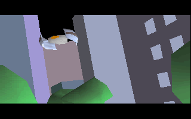
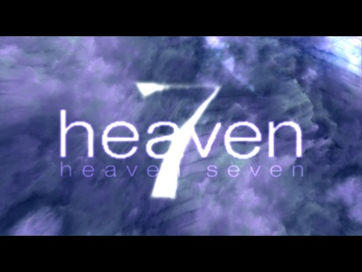
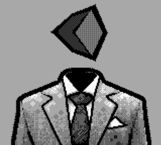
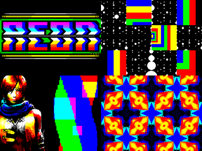
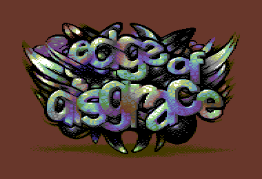
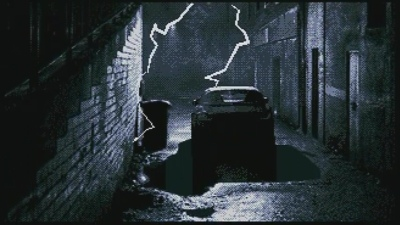
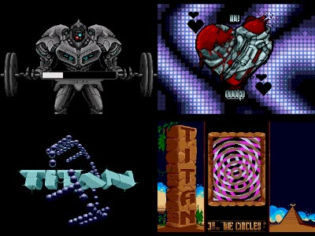

Introdução a Demoscene
Criado por:

É a cultura da criação de arte em tempo real pela história da computação caseira.

Demo |
Scene
|
Abreviação de demonstração |
É o panorama desta cultura |
O que são demos?
São aplicações, não interativas
Demostram a habilidade artística de um grupo de pessoas para criar
uma curta animação.
Produção audio-visual em tempo-real
São o resultado do trabalho de programadores, músicos, pintores digitais,
modeladores 3D, fotógrafos e editores de video.
Sem fins lucrativos
Criação de arte independente de conteúdo comercial e em geral sobre
alçada Creactive Commons.
Demos Icónicas
|
Second Reality por Future Crew Demo para MS-DOS |
 |
Das primeiras aplicações com gráficos em tempo real 3D, que quebrou as concepções do que se conseguia fazer nesta plataforma.
Demos Icónicas
|
.the .product por Farbrausch Demo para Windows em 64kB |

|
Uma demo de um dos grupos mais conhecidos da demoscene, é caracterizada pelo seu pequeno tamanho, requerendo algoritmia avançada para gerar o conteudo visual e sonoro.
Demos Icónicas
|
Elevated por Rgba Demo para Windows em 4kB |

|
Mais um exemplo de size-coding, em que o código principal de sintetização dos gráficos corre exclusivamente no processador gráfico, permitindo geração de um mundo virtual sem o recurso convencional a geometria.
Demos Icónicas
|
Starstruct por The Black Lotus Demo para Amiga 1200 |

|
Uma produção audio-visual muito bem conseguida para uma plataforma criada em 1992, que recorre a diversos truques para ultrapassar os limites computacionais da plataforma.
Demos Icónicas
|
Heaven Seven por Exceed Demo para MS-DOS/Windows |
 |
Utilização de ray-tracing em tempo real, 20 anos antes da normalização de hardware grafíco para ray-tracing.
Origem da Demoscene
Década de 1980
O inicio do acesso a computação em casa.
Cracks de Software
Programas de removiam as protecções anti-copia.
Copy Parties
Eventos em que os participantes partilhavam copias de software.
Tagging/Grafiti Digital
As alterações ao software original eram marcados com a tag do grupo responsável.
Bulletin Board Systems (BBS)
Antecessor do IRC, foruns e redes sociais, terminais remotos acessiveis por dial-up.
Década de 1980
Massificação do acesso a computadores
A necessidade de acesso a software de produtividade e jogos levou a distribuição de formas menos legais.
Mecanismos de protecção
Introdução de diversos mecanismos de detecção de copias ilegais do software. Como alterar a forma como os dados eram escritos nas disquetes.
 |
 |
 |
Cracks de Software
Crackers
Grupos de pessoas que analisavam o código das aplicações para remover os mecanismos de protecção anti-copia.
Grafiti Digital
As alterações ao software eram também estéticas, de forma a deixar a impressão digital dos criadores do crack no software.
 |
 |
 |
Copy Parties > Demoparties
|
Copy Parties Cracktro Demoparties |

|
BBS
Bulletin Board System
São os predecessor de foruns e redes sociais, em que alguns partilhava-se cracks e informação sobre estes.
Dial-Up
Utilizadores tinham de se ligar a números de telefone e esperar que não tivessem ocupados.
ASCII/ANSI Art
Uma das formas de transmitir imagens pela consola, colorir caracteres especiais e assim compor imagens.
Plataformas da Demoscene
Primeiros computadores caseiros de 8 bits
Início e década de 1980: Spectrum ZX, Commodore 64, MSX
Computadores de 16 bits
Fim de 1980 e inicio de 1990: Commodore Amiga, MS-DOS
Computação moderna de 32/64 bits
Fim da década de 1990 e tempo atual: Windows PC, Apple, Browser
Consolas de Jogos
Megadrive, Playstation, Nintendo 64, etc...
Plataformas da Demoscene (8bit)
Consolas de jogos e computadores com recursos limitados, que não possuiam mais de 16 cores e resoluções muito baixas, funcionam em geral ligados ao ecrã da TV com moduladores.
| Ano | Ram | Resolução | Cores/Tons | |
| ZX Spectrum | 1982 | 16KB | 256 x 162 | 15 |
| Commodore 64 | 1982 | 64KB | 320 x 200 | 16 |
| Gameboy | 1989 | 8KB | 160 x 144 | 4 |
| Gejmbåj | aeon | Edge of Disgrace |
|  |  |  |
| 2010 | 2008 | 2008 |
Plataformas da Demoscene (16bit)
Inicio da computação caseira com capacidades mais evoluidas e consolas de jogos também mais sofisticadas.
| Ano | Ram | Resolução | Cores/Tons | |
| Amiga 500 | 1985 | 512KB | 368×567 | 6bpp |
| Megadrive | 1991 | 64KB | 256×240 | 61 cores |
| MSDOS | 1989 | 1MB |
| EON | Overdrive | Second Reality |
|  |  | |
| 2019 | 2013 | 1993 |
Demoparty
|
Eventos públicos que decorrem em vários paises durante o ano Participação internacional de todos os lados do mundo Competições & Concertos ao vivo & Apresentações Visualização de produções de anos anteriores Muita diversão, histórias da industria, show-off de projectos pessoais e novos amigos! |


|